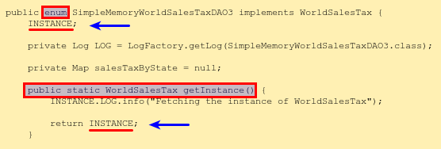
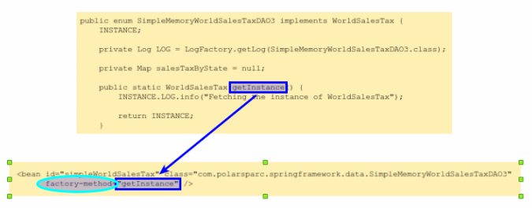

In
Part 3 of this series, we got our hands dirty on injecting application beans that contained initialization
and clean-up methods using the 3 different approaches.
In this part, we will explore the use-case where we get the reference to a singleton collaborator (dependee) bean via
a factory method. We will demonstrate this use-case using the 3 different approaches.
Hands-on with Spring Framework Core - 4
We will demonstrate each of the 3 approaches using a simple Hello greeter (in different
languages) example with a little twist - we will also display the sales tax corresponding to the country (associated
with the language).
XML based Approach
The simple Hello greeter standalone application will output a greetings message for a
chosen language (English, French, etc) and a specified name. In addition, it will tag the sales tax for the country of
the chosen language. The hello message (for a chosen language) and the sales tax (for the country of the chosen
language) are abstracted in the data package, while the greeter is abstracted in the service package.
The interface WorldHelloDAO as well as its implementation POJO
SimpleMemoryWorldHelloDAO from the data package have no changes and remains the same.
The interface WorldSalesTax from the data package has no change and remains the same.
The following is the POJO SimpleMemoryWorldSalesTaxDAO3 from the data package that
implements the interface WorldSalesTax and stores the sales tax rates for a predefined
set of languages (English, French, German, Italian, and Spanish) in a java.util.Map:
Notice the use of enum in the code SimpleMemoryWorldSalesTaxDAO3
above to force a singleton instance.
See Figure.1 below.

Figure.1
The following XML file sample8-beans.xml specifies the configuration metadata for the
Spring Framework IoC container:
To create an instance of a bean via its factory method, use the factory-method
attribute on the corresponding <bean> element.
See Figure.2 below.

Figure.2
Now that we have got the application POJOs and the configuration metadata defined in an XML file, it is time
to bring them together into the Spring Framework IoC container as a standalone
Java application.
The following is the Spring Framework application Sample10:
Executing the Java program Sample10 listed above should generate an output similar to
the following:
Output.1
Jul 20, 2019 11:28:49 AM com.polarsparc.springframework.data.SimpleMemoryWorldHelloDAO
INFO: Initialized a new instance of SimpleMemoryWorldHelloDAO
Jul 20, 2019 11:28:49 AM com.polarsparc.springframework.data.SimpleMemoryWorldSalesTaxDAO3
INFO: Initialized a new instance of SimpleMemoryWorldSalesTaxDAO3
Jul 20, 2019 11:28:49 AM com.polarsparc.springframework.data.SimpleMemoryWorldSalesTaxDAO3 getInstance
INFO: Fetching the instance of WorldSalesTax
Jul 20, 2019 11:28:49 AM com.polarsparc.springframework.Sample10 main
INFO: Guten Tag, Eagle >>> Sales Tax: 20.0
Jul 20, 2019 11:28:49 AM com.polarsparc.springframework.Sample10 main
INFO: Salve, Goose >>> Sales Tax: 25.0
Annotation based Approach
The interface WorldHelloDAO as well as its implementation POJO
SimpleFileWorldHelloDAO2 from the data package have no changes and remains the same.
The interface WorldSalesTax as well as its implementation POJO
SimpleMemoryWorldSalesTaxDAO3 from the data package has no changes and remains the same.
The interface HelloGreeter from the service package has no change and remains the same.
The following is the POJO SimpleHelloGreeter8 from the service package that implements
the interface HelloGreeter. It returns a greetings message that consists of the 'Hello' for
the chosen language and the specified name along with the sales tax rate of the country corresponding to the chosen
language:
Notice the use of the @Lazy annotation on the class
SimpleHelloGreeter8 above. By default, the Spring Framework IoC container creates and
initializes the application bean(s) eagerly on startup. This annotation indicates to the Spring
Framework IoC container that it initialize the application bean(s) only when they are referenced at runtime.
The following XML file sample9-beans.xml indicates to the
Spring Framework IoC container that it perform component scanning at the specified package level for
annotation processing:
Spring Framework does not have any annotation to indicate the use of factory method. Hence,
we define the application bean (with id worldSalesTax3) in the XML configuration metadata
file and specify the factory-method attribute.
The primary attribute with the value of true on the associated
<bean> element indicates this bean will be preferred (primary) over the other instances
of the same type.
⚠ ATTENTION ⚠
Not using the primary attribute will cause the following exception:
No qualifying bean of type 'com.polarsparc.springframework.data.WorldSalesTax' available: expected single matching bean but found 2: worldSalesTax3,simpleMemoryWorldSalesTaxDAO2
The following is the Spring Framework application Sample11:
Executing the Java program Sample11 listed above should generate an output similar to the
following:
Output.2
Jul 20, 2019 12:52:21 PM com.polarsparc.springframework.data.SimpleMemoryWorldSalesTaxDAO3
INFO: Initialized a new instance of SimpleMemoryWorldSalesTaxDAO3
Jul 20, 2019 12:52:21 PM com.polarsparc.springframework.data.SimpleMemoryWorldSalesTaxDAO3 getInstance
INFO: Fetching the instance of WorldSalesTax
Jul 20, 2019 12:52:21 PM com.polarsparc.springframework.data.SimpleFileWorldHelloDAO2
INFO: Created new instance of SimpleFileWorldHelloDAO
Jul 20, 2019 12:52:21 PM com.polarsparc.springframework.data.SimpleFileWorldHelloDAO2 init
INFO: Initializing cache from the file sample7.csv
Jul 20, 2019 12:52:21 PM com.polarsparc.springframework.data.SimpleFileWorldHelloDAO2 init
INFO: Cache successfully initialized with {german=Gut3n T4g, spanish=H0l4, english=H3ll0, italian=S4lv3, french=B0nj0ur}
Jul 20, 2019 12:52:21 PM com.polarsparc.springframework.data.SimpleMemoryWorldHelloDAO2
INFO: Initialized a new instance of SimpleMemoryWorldHelloDAO2
Jul 20, 2019 12:52:21 PM com.polarsparc.springframework.data.SimpleMemoryWorldHelloDAO3
INFO: Initialized a new instance of SimpleMemoryWorldHelloDAO3
Jul 20, 2019 12:52:21 PM com.polarsparc.springframework.data.SimpleMemoryWorldSalesTaxDAO2
INFO: Initialized a new instance of SimpleMemoryWorldSalesTaxDAO2
Jul 20, 2019 12:52:22 PM com.polarsparc.springframework.Sample11 main
INFO: H3ll0, Monkey >>> Sales Tax: 10.0
Jul 20, 2019 12:52:22 PM com.polarsparc.springframework.Sample11 main
INFO: H0l4, Chimp >>> Sales Tax: 30.0
JavaConfig based Approach
The interface WorldHelloDAO as well as its implementation POJO
SimpleFileWorldHelloDAO from the data package have no changes and remains the same.
The interface WorldSalesTax as well as its implementation POJO
SimpleMemoryWorldSalesTaxDAO3 from the data package have no changes and remains the same.
The interface HelloGreeter as well as its implementation POJO
SimpleHelloGreeter6 from the service package have no changes and remains the same.
The following is the JavaConfig POJO Sample12Config from
the config package:
The following is the Spring Framework application Sample12:
Executing the Java program Sample12 listed above should generate an output similar to
the following:
Output.3
Jul 20, 2019 1:07:48 PM com.polarsparc.springframework.data.SimpleMemoryWorldHelloDAO
INFO: Initialized a new instance of SimpleMemoryWorldHelloDAO
Jul 20, 2019 1:07:48 PM com.polarsparc.springframework.data.SimpleMemoryWorldSalesTaxDAO3
INFO: Initialized a new instance of SimpleMemoryWorldSalesTaxDAO3
Jul 20, 2019 1:07:48 PM com.polarsparc.springframework.data.SimpleMemoryWorldSalesTaxDAO3 getInstance
INFO: Fetching the instance of WorldSalesTax
Jul 20, 2019 1:07:48 PM com.polarsparc.springframework.Sample12 main
INFO: Guten Tag, Dragon >>> Sales Tax: 20.0
Jul 20, 2019 1:07:48 PM com.polarsparc.springframework.Sample12 main
INFO: Salve, Mongoose >>> Sales Tax: 25.0
With this, we wrap this series on Spring Framework Core Essentials.